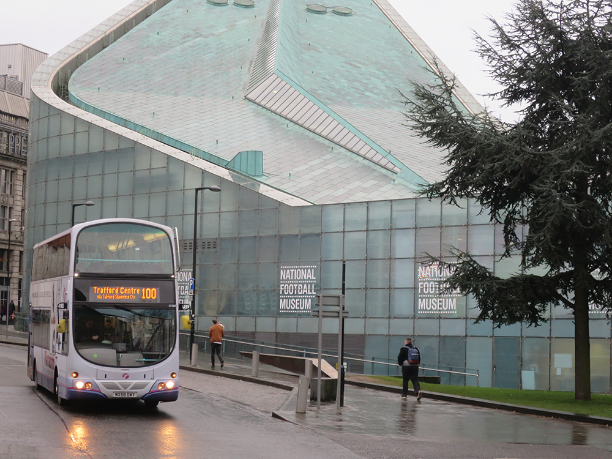

The National Football Museum is England's national museum of football. It is based in the Urbis building in Manchester city centre, and preserves, conserves and displays important collections of football memorabilia. The museum was originally based in Deepdale, Preston, Lancashire, but moved to Manchester in 2012.
The National Football Museum is England's national museum of football. It is based in the Urbis building in Manchester city centre, and preserves, conserves and displays important collections of football memorabilia.
